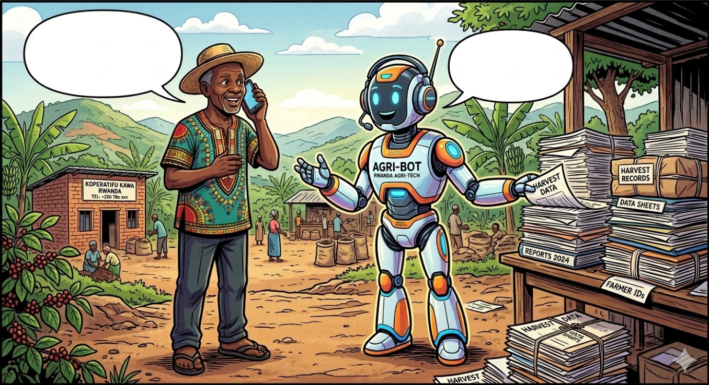

Tunga Agri-Chatbot Open Source Suite - A full system to build call center agent based voicebots in Kinyarwanda e.g. for Agriculture and other sectors

Voicebots acting as call center agents—accessible via telephone and capable of speaking local languages—hold immense potential for development cooperation. They provide a vital link to users in rural areas who may lack internet access, have limited literacy, do not speak English or do not own digital devices. We believe voice-driven interfaces are the most intuitive way to bridge the digital divide for these communities.
As part of the Tunga project, we have developed such a voicebot. To support further innovation in this space, we are releasing a comprehensive suite of foundational AI models and datasets:
Text-to-speech model
Currently the highest-quality synthetic voice for Kinyarwanda.
https://huggingface.co/C4IR-RW/kinya-flex-tts
KinyaCOLBERT Free
The first Kinyarwanda embedding/information retrieval model, essential for building RAG chatbots such as Tunga.
https://huggingface.co/C4IR-RW/kiny-colbert-free
Voice Dataset
A dataset for training TTS and Speech-to-Text (STT) models.
https://huggingface.co/datasets/C4IR-RW/kinya-ag-tts
Information Retrieval Dataset
The data used to train the KinyaColBERT model.
https://huggingface.co/datasets/C4IR-RW/kinya-ag-retrieval
KinyaBERT
A foundational BERT-style model serving as the backbone for various Kinyarwanda NLP tasks.
https://huggingface.co/C4IR-RW/kinyabert
Source Code
All relevant code for the models and datasets mentioned above.
https://github.com/c4ir-rw/ac-ai-models
Data characteristics
[Auto-enriched from linked project resources]
Two Kinyarwanda agricultural datasets. (1) TTS Dataset (kinya-ag-tts): 10,480 audio clips (5,242 female, 5,238 male) of voice actors reading agricultural content. Format: WAV mono at 24 kHz, with TSV metadata mapping clip IDs to text. Total size: 2.63 GB. (2) Retrieval Dataset (kinya-ag-retrieval): 984 agricultural passages in Kinyarwanda paired with 19,537 questions. Structured as query-positive-negative triplets for training retrieval models (1,901,200 training triplets, 19,600 dev, 32,900 test). Format: TSV. Includes morphologically parsed versions of passages and queries. Both datasets created by C4IR Rwanda and KiNLP. License: CC-BY 4.0.
Source: https://huggingface.co/datasets/C4IR-RW/kinya-ag-tts, https://huggingface.co/datasets/C4IR-RW/kinya-ag-retrieval
Model characteristics
[Auto-enriched from linked project resources]
Two pretrained models for a Kinyarwanda agricultural IVR system. (1) TTS Model (kinya-flex-tts): Multi-speaker text-to-speech based on MB-iSTFT-VITS2 architecture. Converts Kinyarwanda text to speech at 24 kHz with 3 speaker options (2 female, 1 male). Requires PyTorch; implementation via the DeepKIN-AgAI package. (2) Retrieval Model (kiny-colbert-free): Information retrieval model for RAG, fine-tuned from Davlan/bert-base-multilingual-cased-finetuned-kinyarwanda. 0.2B parameters, F32 safetensors format. Trained on agricultural question-passage pairs. Usable via ragatouille library. Both models by C4IR Rwanda and KiNLP. License: CC-BY 4.0.
Source: https://huggingface.co/C4IR-RW/kinya-flex-tts, https://huggingface.co/C4IR-RW/kiny-colbert-free
How to use
[Auto-enriched from linked project resources]
## How to Use This Resource
The Tunga Agri-Chatbot Suite provides the building blocks for a Kinyarwanda-language agricultural advisory system delivered via Interactive Voice Response (IVR). It was built to address capacity gaps in Rwanda's agricultural extension services and is implemented by C4IR Rwanda and KiNLP, supported by GIZ and financed by BMZ.
This suite is relevant for anyone working on agricultural extension, farmer advisory services, or voice-based information delivery in Rwanda or similar contexts. The core idea is that smallholder farmers can call a phone number and receive spoken agricultural guidance in Kinyarwanda -- covering topics such as pest and disease diagnosis, agro-climatic practices, and MINAGRI support programmes -- without needing internet access or literacy.
The text-to-speech component (kinya-flex-tts) can generate natural-sounding Kinyarwanda speech with three voice options (two female, one male), outputting audio at broadcast quality (24 kHz). A live demo is available at [huggingface.co/spaces/Professor/c4ir-rw-kinyarwandatts](https://huggingface.co/spaces/Professor/c4ir-rw-kinyarwandatts), where you can hear sample outputs before deciding whether to integrate the model. The underlying TTS training dataset contains 10,482 audio clips recorded by two voice actors, all licensed under CC-BY-4.0.
The passage retrieval component (kiny-colbert-free) matches farmer questions in Kinyarwanda to relevant agricultural knowledge passages. This is the engine that allows the system to find the right answer from a knowledge base when a farmer asks a question. The accompanying retrieval dataset contains 984 agricultural passages, 19,537 related questions, and nearly 2 million training triplets, also under CC-BY-4.0.
The suite also includes KinyaBERT, a morphology-aware language model for Kinyarwanda used for passage ranking, available in base (107M parameter) and large (365M parameter) variants. All model code, training scripts, and technical documentation are available in the [DeepKIN-AgAI package on GitHub](https://github.com/c4ir-rw/ac-ai-models/tree/main/DeepKIN-AgAI). All components require attribution to C4IR Rwanda and KiNLP.
Developers and researchers can extend this work to other crops, regions, or languages, or integrate these components into existing agricultural advisory platforms. The individual models (TTS, retrieval, language understanding) can also be used independently for other Kinyarwanda language technology applications beyond agriculture. All datasets and models are hosted on Hugging Face under the [C4IR-RW organisation](https://huggingface.co/C4IR-RW).
Sources:
- https://huggingface.co/datasets/C4IR-RW/kinya-ag-tts
- https://huggingface.co/datasets/C4IR-RW/kinya-ag-retrieval
- https://huggingface.co/C4IR-RW/kinya-flex-tts
- https://huggingface.co/C4IR-RW/kiny-colbert-free
- https://huggingface.co/C4IR-RW/kinyabert
- https://github.com/c4ir-rw/ac-ai-models
Datasets
Use cases
About
Powered by / Provided by: Centre for the Fourth Industrial Revolution Rwanda (C4IR), Kigali Natural Language Processing (KiNLP)
Catalyzed by: FAIR Forward - AI for All, GIZ
Financed by: BMZ
Authors: Jan Nehring
Contact: C4IR Rwanda (info@c4ir.rw)